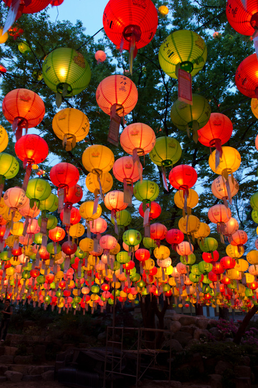

고려가요 <쌍화점>의 현대적 변용으로서의 영화 <쌍화점>을 분석하고, 콘텐츠를 제안하는 페이지에 오신 것을 환영합니다!
이 페이지는 4조 쌍화점 위키페이지 의 자료를 바탕으로 두고 있음을 밝힙니다.
고려가요 <쌍화점>은 그 제목부터 현대어로 풀이하면 ‘만두가게’이다. 처음 아이디어를 얻게 된 것은 이런 단순한 접근에서부터였다. 제 4연에서는 직접적으로 ‘술파는 집’의 에피소드도 나온다. 여기에 자유 분방하고 개방적인 시적상황을 바탕으로 '주점'이라는 공간 콘텐츠로서의 활용방안을 떠올리게 되어 '쌍화점'이라는 상호명의 술집 개업을 제시하게 되었다.
최근 방탄소년단 등으로 인한 K-pop, <오징어게임>과 같은 k-drama 등 K-문화가 전세계적으로 크게 부상하고 있다. 그중에서도 실제로 갓, 한복 등 한국 콘텐츠 속에서 발견가능한 한국의 전통문화에 대한 관심을 가지는 외국인들도 쉽게 찾아볼 있었다. 이러한 한류 열풍은 자연스럽게 한국을 방문하는 해외 관광객 유치에 지속적 영향을 미칠 것으로 보인다.
한국의 젊은 문화를 즐기기 위해 해외 관광객들이 가장 먼저 떠올리는 곳으로 단연 한국의 주점들을 빼놓을 수 없을 것이다. 이런 주점들 중에 한국의 정서를 잘 드러내는 특색있는 가게가 있다면 어떨까. 더욱이 한국의 옛 노래인 고려가요에서 아이디어를 얻은 가게라면? 이는 한국의 전통, 역사를 홍보하는 데에 큰 도움이 될 것이라 생각한다. 외국인뿐만 아니라 같은 한국인들에게도 이런 가게는 상당히 신선하고 독특한 인상을 심어줄 것이다. 단순히 한국의 전통뿐만 아니라, 고려가요와 연결시킨 해당 가게의 특별한 음식, 전통주, 노래를 통해 자연스럽게 고려가요에 대한 관심을 환기시킬 수 있는 효과 또한 기대할 수 있다. 이 외에도 한복을 입고오는 손님들에게 특별한 서비스를 제공하는 등의 다양한 이벤트도 실시하여 한국의 전통문화를 이끌어가고 젊은 세대들에게 새롭게 접근하는 등 한국의 문화를 다방면으로 발전시키는 데 기여할 수 있을 것으로 예상된다.
쌍화점
해당 가게의 메인 안주는 가게명에서 착안해 '만두'로 한다. 그 외에도 파전이나 두부김치 등 안주에 대해서는 전통주와 어울리는 다양한 안주를 둔다.
- 만두(고기만두/김치만두)
- 해물부추전/김치전/배추전/감자전
- 두부김치
- 보쌈
- 등
가게 분위기에 맞게 가게에서 직접 제조한 막걸리와 전통주를 메인으로 판매한다. 주류의 이름은 도수와 맛을 바탕으로 여러 고려가요의 제목에서 착안해 정한다.
-가시리 (알코올 18%) 이별의 정서에 맞게 상대적으로 높은 도수
-처용 (알코올 10%) 재앙을 물리치는 굿노래로 불린 노래인 만큼 고민과 걱정을 잊을 수 있을만한 도수
-동동 (알코올 6%) 놀이에서 주로 부른 노래에 맞게 부담없이 즐길 수 있는 도수
-등

<천산대렵도>

<나전칠기>

<연등>

평소에는 개량한복 느낌의 편한 유니폼을 착용하는 것을 기본으로 한다. 그러나 가게의 이벤트 기간 동안에는 해당 작품의 등장인물인 '회회아비', '스님', '우물용(왕)', '상인', '고려 여성' 등과 같이 당시 고려 시대의 사람들처럼 어울리는 유니폼을 착용한다. 점원들의 옷을 통일하기 보다 각 계층의 인물이 다 달랐던 것처럼 약간의 차이를 둔다.
이벤트 기간동안 한복을 입고 방문하는 손님에게 안주 한 개를 공짜를 준다거나, 혜택을 부여한다. 자연스럽게 이벤트 홍보도 되고, 손님들이 완전히 <쌍화점>의 컨셉에 몰입해서 분위기를 즐길 수 있을 것으로 기대된다. 이벤트 기간이 아닌 평소에도 점원들이 한복을 입고 맞이한다면, 조금은 낯설고 거부감이 들 수도 있을 것을 감안하였다.
최신가요와 같이 가사가 두드러지는 노래를 틀으면, '<쌍화점>의 고전적인 컨셉이 망가지지 않을까'라는 생각에서, 가사가 거의 없는 가야금 연주곡 등을 배경음악으로 설정한다. 주점 "쌍화점"에서는, 신나는 노랫말이 울려퍼지고 노랫말을 자유롭게 따라 부르는 시끄러운 분위기보다는, 잔잔한 배경음악을 바탕으로 손님들이 옛 정취에 취해 술잔을 기울이기를 바란다.
그러나 주말이나 이벤트 기간에는 많은 인파와 신나는 분위기를 위해 잔잔한 연주곡 보다는 현대적으로 재해석한 고려가요, 민요 또는 현대곡을 전통적으로 편곡한 노래들을 배경음악으로 사용하며 차별성을 둔다.